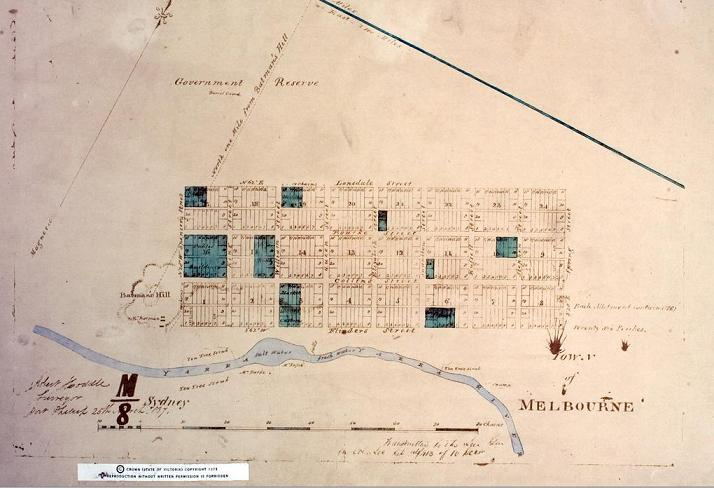
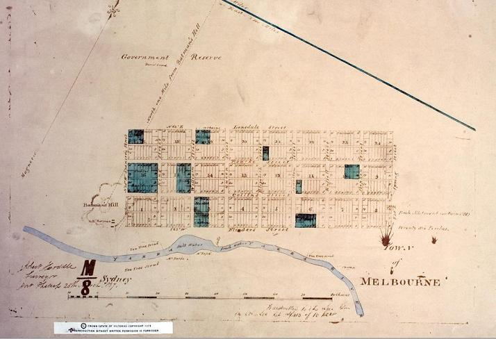
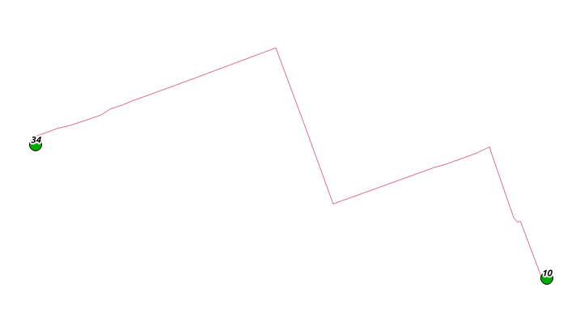
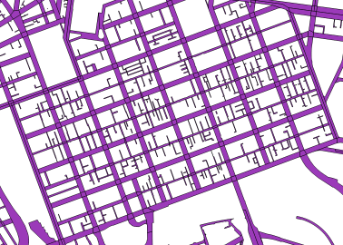

You can play PacMan by collecting food along the CBD arterials. Coffee is especially valuable.
Locate PacMan on the grid:
Locate PacMan on the grid:
The PacBike project is an interactive visualisation of the Melbourne Bike Share scheme. The PacMan board is based the Melbourne CBD, as designed by Robert Hoddle in the 1830s, with its arterial roads and laneways.

The visualisation retraces all trips taken on the Bike Share scheme during the first fortnight of February 2014. A timer allows to track when these trips occurred, and observe the patterns of cycling movements across the day.
Trips are colour-coded based on their duration:
are short trips (less than 20mn),
are medium trips (between 20 and 40mn),
are longer trips.
There is the odd cyclist, looking to get back home at 3am. But then, around 7am, the dance of cyclists across the CBD starts again.

Robert Hoddle's survey of the town of Melbourne in 1837 (Wikipedia)
Each ghost is a cyclist taking a trip on the Melbourne Bike Share scheme, and PacMan is ... well, PacMan - looking for coffee and other healthy food within the CBD.The visualisation retraces all trips taken on the Bike Share scheme during the first fortnight of February 2014. A timer allows to track when these trips occurred, and observe the patterns of cycling movements across the day.
Trips are colour-coded based on their duration:
are short trips (less than 20mn),
are medium trips (between 20 and 40mn),
are longer trips.
There is the odd cyclist, looking to get back home at 3am. But then, around 7am, the dance of cyclists across the CBD starts again.
The main ideas behind the visualisation were:
- getting a visual understanding of the flow of cyclists within the CBD,
- putting the visualisation in the public sphere to start a conversation on the adequacy of the scheme and the underlying cycle infrastructure,
- providing a game-like experience around the Bike Share scheme,
- being a fun challenge to undertake, and potentially entertaining for White Night patrons!
The project involved a number of challenges along the way:
- collecting the data: every minute, the Melbourne Bike Scheme server was sampled to retrieve the current state (empty and busy docks) across the bike share scheme,
.., { "id": "4", "name": "Federation Square", "lat": "-37.817523", "long": "144.967814", "public": "true", "nbBikes": "21", "nbEmptyDocks": "6" }, .. - modelling the trips: given that bike trips are not identified (we don't know where a bike arriving at a station has come from), a model of possible origin/destination was built, based on the estimated time trip and the popularity of a station as a destination,
- geocoding the trips: each origin/destination was subsequently submitted to a routing engine (MapQuest) to obtain the most probable cycling route between origin and destination, 
- visualising trips on the PacMan board: trips were remapped to a simplified, well-oriented version of the CBD (the Hoddle grid is rotated 20 degrees from full North), 
- interacting with PacMan: a small, captive Wifi network was setup to reduce the latency of interactions from a mobile phone.
The various components of the project, with their source:
Software tools used:
Work by Herve Senot (RMIT student in Sustainable Energy Systems)
Website: http://www.carbongis.com.au
Contact: hsenot@gmail.com
- street network: Victorian government data catalogue (http://www.data.vic.gov.au/),
- station data (location and status): Melbourne Bike Share scheme website (http://www.melbournebikeshare.com.au/stationmap),
- various icons & clipart: openclipart.org,
- PacMan sprite sheet: Scratch programming environment (MIT),
- the PressStart2P font: openfontlibrary.org,
Software tools used:
- Javascript libraries (jQuery, Bootstrap, gameQuery, GSAP),
- PHP (polyline decoding),
- Python (various data processing),
- PostgreSQL/PostGIS (spatial functions),
- Quantum GIS (desktop map editing)
- MapQuest Directions API, itself based on OpenStreetMap data (trips routing),
Work by Herve Senot (RMIT student in Sustainable Energy Systems)
Website: http://www.carbongis.com.au
Contact: hsenot@gmail.com